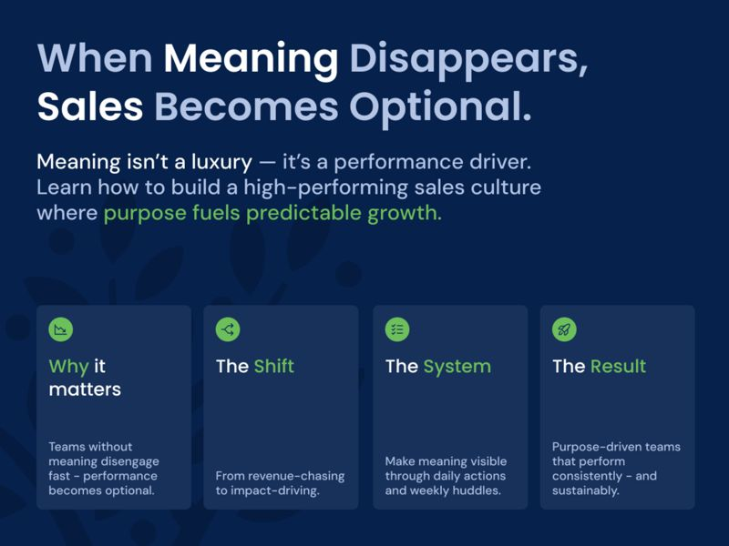
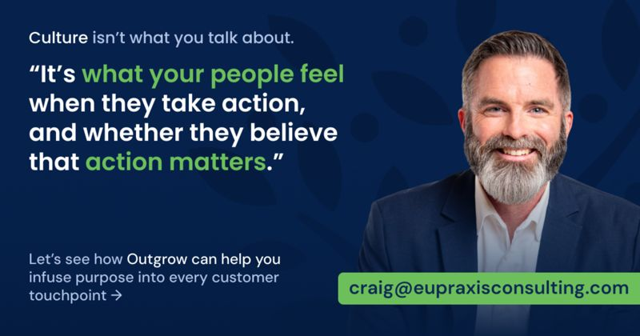

The Culture Multiplier: How Managers Keep Belief Alive When You’re Not in the Room
A proactive culture doesn’t happen by accident. Discover how managers turn belief into a weekly rhythm that keeps teams aligned and consistently growing.
ReadCulture & Mindset

(Part 5 of the PERMA Series)
In this series, we’ve been exploring how things like engagement and relationships are the lifeblood of sustainable growth — and how creating a high-performance sales culture depends on activating both. Most companies are sitting on a goldmine of dormant contacts and internal signals they’re not acting on.
But there’s an even deeper layer we need to talk about now.
A quieter force that determines whether people actually stay in motion long enough to make all this work stick.
And when meaning is present your people move with clarity, energy, and pride.
When it’s absent? They go through the motions… until they eventually check out altogether.
And in today’s economy where every team member is wearing multiple hats, meaning isn’t a luxury. It’s a performance driver.
Now here’s the uncomfortable part:
Most companies talk about KPIs, deadlines, and objectives…
But they rarely talk about why the work is worth doing in the first place.
Especially in customer-facing roles.
Salespeople are told to hit their numbers.
CSRs are told to be “efficient.”
Ops teams are told to deliver on scope.
But who’s telling them:
Most people have no idea how much impact they’re actually making because no one’s showing them.
And when people lose sight of the “why,” everything becomes harder:
It’s a subtle erosion of morale… and momentum.
And eventually, people burn out, not from the workload, but from the emptiness.
The moment your team forgets why the work matters is the moment performance becomes optional.
And yet most companies don’t have a system to communicate meaning consistently.
The good news? You don’t need a motivational speaker or a mission statement refresh.
You just need a way to make impact visible again.
Imagine “meaningful work” not just as a buzzword, but a daily source of fuel for your customer-facing team.
It’s simpler than you think. And it changes everything.
Here’s a hard truth that most leaders eventually learn the painful way:
You can give your team the best script, CRM, and incentives on earth…
But if they don’t believe the work matters, they won’t sustain the effort.
Because belief beats tactics every time.
And that’s why, when companies infuse their business development culture with meaning, their teams go from going through the motions… to moving mountains.
Let’s start with what this actually looks like.
Picture a company where:
That’s not fluff. That’s emotional alignment.
That’s the invisible thread that turns action into momentum.
And that’s the unlock.
This is what positive psychology has told us for decades, that meaning amplifies motivation, buffers against burnout, creating a high-performance sales culture that’s sustainable. PERMA isn’t theoretical. It’s operational. And “M” – Meaning – might be the most underestimated force in business development.
So how do you make meaning show up in a sales culture?
It starts with a fundamental reframe:
Instead of asking “How do we close more deals?”
Start asking, “How do we help more people today?”
That’s the shift. From revenue-chasing… to impact-driving.
Once you adopt that lens, everything changes:
And guess what?
When meaning is present, performance becomes exponential.
Why? Because your team stops holding back.
They swing more.
They follow up more.
They share more opportunities across functions.
Not because they’re told to. But because they want to.
They feel like part of something bigger than themselves.
And that’s what makes a culture unstoppable.
In companies using the Outgrow system, we see this shift happen fast:
That’s not about charisma. That’s about meaning.
And you don’t need to “motivate” people to do this.
You just need to show them how much impact they’re already making.
That’s what we’ll unpack next: the Outgrow process for operationalizing meaning without adding overhead.
Because when you build a system that reflects your people’s value back to them daily…they rise. Every time.
Let’s get practical.
You want your team to feel like what they do matters not just to you, but to your customers, to the business, and to each other.
But meaning isn’t something you can shout into existence at a quarterly all-hands.
It has to be built into the rhythm of the work.
And that’s what the Outgrow system delivers: a repeatable, visible, reinforcing loop that reminds your team why they matter. Every single week.
Here’s how it works:
You can’t manufacture meaning. But you can surface it.
And the easiest way to do that is by mining for moments when customers have said:
Outgrow helps your leadership team and front-line staff learn from and marinate in this positive feedback.
And once you start sharing it, the culture starts shifting:
Meaning starts flowing back into the day-to-day.
During each weekly Outgrow Huddle, we carve out time for success stories:
“Where did you make a difference last week?”
This isn’t about ego. It’s about identity reinforcement.
When a sales rep says, “I followed up on an old client, and they were grateful just to hear from us,” that’s meaning.
When a field tech says, “I mentioned a service we hadn’t talked about before, and they asked for pricing,” that’s meaning.
And when those moments get shared aloud in front of peers, the emotional ROI becomes real.
You’re not just logging calls. You’re changing the customer experience for the better.
Each swing (a proactive action) is framed in Outgrow not as a pitch, but as a helping act.
This makes a massive difference.
Your team isn’t cold-calling. They’re:
Because when outreach is rooted in service, it feels good to do.
And when something feels good, your people want to do it again.
That’s how meaning becomes habit.
Here’s a leadership secret: the words you use shape what people believe about their work.

That’s why in Outgrow, we encourage CEOs and managers to say things like:
When your team starts hearing these cues – consistently – they begin to internalize the mission.
Now they’re not just “doing a job.”
They’re contributing to something meaningful.
That’s the positive feedback loop we build:
→ Take helpful action.
→ See the impact.
→ Feel good about it.
→ Do it again.
It doesn’t require a culture overhaul.
Just a process that makes emotional progress visible, not just financial results.
When you think about what it takes to grow your business, what’s your first instinct?
More leads? More salespeople? More hustle?
Those things can help, but they’re not what actually drives long-term, culture-wide growth.
That comes from something deeper.
Something more durable.
Something most companies overlook:
Meaning.
If your customer-facing people wake up every day believing:
Then outreach becomes natural.
Follow-up becomes consistent.
And sales becomes shared, not siloed.
But if they don’t believe those things?
If they feel like just another cog, chasing just another number?
Then even the best strategy, the most advanced CRM, or the most charismatic sales leader won’t make a difference.
Because you can’t scale indifference.
But you can scale belief.
The companies that grow the fastest, retain the best talent, and deliver the best client experiences aren’t just operationally excellent, they’re emotionally aligned around a shared sense of purpose and have mastered creating a high-performance sales culture rooted in meaning and purpose.
And the good news?
That’s not reserved for unicorns or Fortune 500s.
It’s available to you — right now — with a simple system that embeds meaning into the rhythm of the business.
That’s what the Outgrow system is built to do.
It helps your team:
And when that happens?
Culture shifts.
Confidence rises.
Performance follows.
Your people stop waiting for motivation.
They start moving from meaning… the strongest fuel there is.
If you’ve been nodding along, if you’ve been seeing the gaps – and the potential – in your own team… now’s the time to take the next step.
Let’s talk through your current culture, your growth goals, and how Outgrow can help you infuse purpose into every customer touchpoint.
It doesn’t take a re-org. It doesn’t take new hires.
It takes a system that shows your people just how valuable they already are.
And once they see it?
They won’t stop showing up.
This article is the fifth article in our PERMA series, where we explore how Positive Psychology principles fuel the Outgrow system to transform sales cultures and drive predictable growth. Explore the full series:
Keep reading
A proactive culture doesn’t happen by accident. Discover how managers turn belief into a weekly rhythm that keeps teams aligned and consistently growing.
ReadDiscover how fostering accomplishment at work drives motivation, momentum, and measurable growth across your entire sales culture.
ReadThe issue isn't laziness. The cost of disengaged employees is lost momentum, but small, consistent actions can reignite engagement and sales.
Read